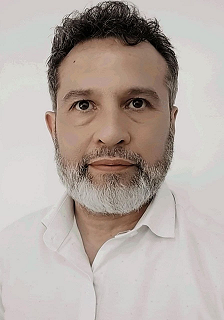

Título: Técnico Superior en Logística – Instituto Braun Menéndez
Título: Técnico en Electrónica.
SQL Udemy SQL desde cero curso práctico.
CISCO Udemy CISCO CCNAFundamentos de Networkingpara Redes IP.
KALI Udemy Kali Linux Basic.
Lecturas y seguimiento de conocimiento en informática. VB.NET - HTML - CSS - PHP - JAVASCRIPT -MySQL
Perfil proactivo, con capacidad de liderazgo y trabajo en equipo. Cuento con experiencia en desarrollo en varios lenguajes. Como Consultor, me especializo en generar y facilitar cambios positivos y sostenibles en las organizaciones. Mi formación y experiencia práctica me permiten tener una visión general de las organizaciones y sus procesos, mi experiencia como consultor en mejora de procesos me permite reconocer desvíos y cuellos de botella, potenciales de transformación. Con el propósito de añadir valor agregado para el cliente y resultados tangibles para la compañía, Identificar oportunidades de mejora en calidad/productividad de procesos y transformarlas mediante la integración de personas, procesos y tecnología. Experiencia en 30 empresas (25 locaciones) en 4 países, Argentina, Uruguay, Brasil y México. En diversos rubros: Alimentos, Petroquímicas, Siderúrgica, Energía Eléctrica, Laboratorio, Artículos electrónicos, Comunicaciones, Textil, Autopartes, Muebles, Agropecuario, Agroindustria, Concesionarios Automóviles, tanto procesos de fabricación y ventas, como procesos soporte y de gestión.
Me gusta poder combinar el tiempo entre varias actividades, la principal poder compartir tiempo con mi familia. Poder viajar y conocer lugares es creo el hobbie más importante. Mi trabajo me ha permitido conocer lugares y personas y se convierte en un estilo de vida pero que compite con mi anhelo de pasar con mi familia. Como soy técnico en Electrónica me gusta inverstigar, armar y reparar algunas cosas, para no perder el toque. Actividad que se lleva muy bien con otra pasión, la radioafición. Soy LU1DEW y en mis tardes o noches escucho el radio. Entre otras cosas me gusta mucho la pesca con devolución, el paddle y el karate y cuando queda algún tiempito un poco de guitarra no viene mal.
Consultor Freelance
Consultor en mejora de proceso
Developer IT
Desarrollador de Sistemas informáticos
Socio consultor
Nombre de la empresa
Factum Consultora Profesional independiente
Fechas de empleo
dic 2014 – actualidad
Duración del empleo7 años y 2 meses
UbicaciónArgentina
En FACTUM nos dedicamos a mejorar la rentabilidad de las compañías mediante mejoras en la gestión de procesos, habilidades e Información con intensivo foco en resultados. Analizamos y desarrollamos mejoras sobre las habilidades, tanto técnicas de los operarios, como de gestión para los distintos mandos. Entendemos la información que necesita la organización para mantener y mejorar el desempeño de los procesos, de tal forma que expongan las oportunidades de mejora, por último, desafiamos la definición de los procesos de forma de aumentar su calidad y eficiencia. Factum asesora a nuestros clientes con la mejor visión estratégica operativa, somos dedicados, nosotros analizamos e implementamos las mejoras necesarias para que su negocio sea mejor. En el aspecto metodológico, resumimos las principales metodologías del mercado en una sencilla y potente receta que combinada con la experiencia de los socios logra traducir las necesidades estratégicas del negocio en desempeño operativo de los procesos. Empresas que formaron nuestra experiencia: Cabaña Argentina, Frigorífico Magret, Alpargatas Textil, Reebok, Aguas Danone Chascomus, Sucesores de Alfredo Williner, Edenor, Edesur, Gestamp BAIRES, VARROC Lightning, CuyoPlacas, Telecom, Kepler Weber, Multicanal, Edesa, Edelar, Duke Energy, AES Generación, INTA, Alpargatas, Acindar, Roemmers, Bunge, Clorox, Autosal, McCain entre otras.
Consultor de mejora en proceso
Renoir Consulting . Contrato temporal
nov 2019 - ene 2020 . 3 meses
Tampico, Tamaulipa, México
• Análisis (AS-IS) mediante estudios y evaluaciones organizacionales para encontrar procesos y sistemas ineficientes/ ineficaces, identificar y cuantificar oportunidades de trabajo y definición del alcance para las ventas del Proyecto; • Diseño de sistemas y procedimientos para conducir de manera más eficiente las prácticas y procedimientos de una organización. • Definición de la estrategia del proyecto (TO-BE), calendario y recursos, alineación con las expectativas del cliente, determinación de resultados operativos y financieros y creación de metodologías de evaluación; • Definición de los KPI del negocio para procesos como Comercial, Producción, PPC, Logística y Mantenimiento. • Metodologías Lean Manufacturing, Business Process Management, Mapeo de flujo de valor, Takt Time, Ishikawa, PDCA, 5’S, Kaizen, Gestión de la fábrica visual, Análisis OEE, Monitoreo del rendimiento de la planta y Cuadro de mando integral, • Análisis de la gestión operativa, redefiniendo nuevas rutinas de trabajo e implementación del control de la productividad laboral. • Dimensionamiento de mano de obra y equipos para atender operaciones comerciales.
GERENTE GENERAL de OPERACIONES
ABS Consultoría
jul 2008 - dic 2014
Consultor en sistemas de gestión de negocios. Mejora de la rentabilidad de las empresas a través del incremento de la eficiencia operativa. Líder en Proyectos, revisión de procesos y cambio organizacional. Diagnóstico de gestiones empresariales y aplicación de metodologías para la implementación de sistemas de gestión por medio de desarrollos con equipos de trabajo. Proyectos en Aguas Danone, Roemmers, Kepler Weber(Brasil), Telecom, Reebok, Alpargatas Textil, Alpargatas Topper, Alter Textil, Sancor. Diagnósticos en Aguas Danone, EDENOR, Car One,Cabaña Argentina, Autosal, Clorox, Carboclor, AES, EMDERSA
Líder de Proyecto
ROEMMERS
feb 2012 - oct 2012 . 9 meses
Líder de proyecto de eficiencia operativa de la distribución de materias primas y semielaborados. Eficiencia de la cadena de abastecimiento. Eficiencia en el control de trabajo en terceros. Mejoras en la ocupación de posiciones en depósitos. Resultados económicos-financieros.
Consultor Supervisor Senior
Telecom Argentina
oct 2011 - ago 2012 . 11 meses
Argentina
Leader de Proyecto en Gestión de Procesos con la Estructuración de Sistemas, Actitud y Procedimientos con la consiguiente Mejora en los Procesos de la compañía, contenidos dentro de la base de conocimiento actual y activa de Telecom. Con el nombre GPS “Gestión de Procesos Sustentables”, el proyecto aplicó la metodología a 12 (doce) procesos elegidos por los directores de la organización, con el objetivo de reducir tiempos y actualizar procedimientos. Un equipo interdisciplinario de la consultora y del cliente trabajamos 42 semanas desarrollan e implementado soluciones de gestión.
Consultor Senior
Alpargatas
Año 2010
Supervisor de Distribución
Exologística
feb 2008 - jul 2008
Supervisor de Distribución
Gargano Logística
Operación Zucamor Quilmes
oct 2006 - ene 2008
La razón por la que estudio esta carrera de programación se debe a que siempre estuve ligado de una forma u otra a esta actividad, pero otras iniciativas fueron ganando terreno en mi vida profesional y a esos sitios caminé. Al ingresar en la consultoría orientada a la mejora de los procesos con la aplicación de tecnologías fui absorvido por esta actividad que me dio la posibilidad de hacer una profesión, conocer personas y rubros que de otra forma talvés no hubiese podido. Con el transcurrir del tiempo comencé nuevamente a fluir hacia la programación, primero mejorano las planillas de Excel con VBA, ya que requería procesar cada vez más datos y poder mostrarlos mejor. Luego realicé una aplicación de manejo de stock y productos en VB.NET y en los últimos años volcado a plataformas WEB interactuando con bases de datos MySQL. Hoy llega el momento en que no de más vuelta y abrace lo que siepre debió haber sido, esta profesión es para mi. Mi expectativa con este curso, que logre incorporar saberes nuevos y completar los que ya tengo, hacerme un profesional de la programación. En particular con Henry, que sean el canal por el cual consiga desarrollarme trabajando.